We want to keep the original purpose of contact improvisation, which is — EXPLORATION.
We are thrilled to announce our fifth annual “Solo & CI Tirol Festival” which will traditionally take place in Austria.
This festival is created for people who would like to practice contact improvisation, contemporary dance, meet people, and talk about art. We also believe that our mission is to maintain and strengthen the physical and mental health of our community which becomes vital as never before.
The “Solo & CI Tirol Festival” is a safe space for you, your friends, and your family, where you will have a chance to get acquainted with contact improvisation and contemporary dance, as well as to take part in daily jams. Spectacular Tirolean landscapes with their impressive mountain ridges, virgin forests, and pure untouchable nature provide perfect environment to recharge your batteries and find new meanings and directions.
We share one great passion: contact improvisation. However, in recent years, we feel that contact improvisation has stalled in its development. We want to keep the original purpose of contact improvisation, which is - EXPLORATION. Therefore, this year we offer a wide range of diverse activities and perspectives to enrich your dance and also look at contact improvisation from a new angle.
The history of Contact Improvisation is rooted in the antiwar movement. CI was developed through and performed during massive protests against the American War in Vietnam. Relying on this long-term political tradition, Solo & CI Tirol Festival 2023 will address the topic of the current war in Ukraine from artistic and social perspectives. Enriched by workshops, lectures, and public talks with artists from Ukraine, the festival aims to create a container for reflection, discussion, and exercise of anti-war practices.
Gallery Highlights
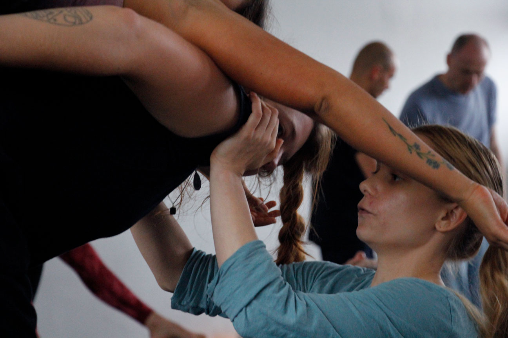
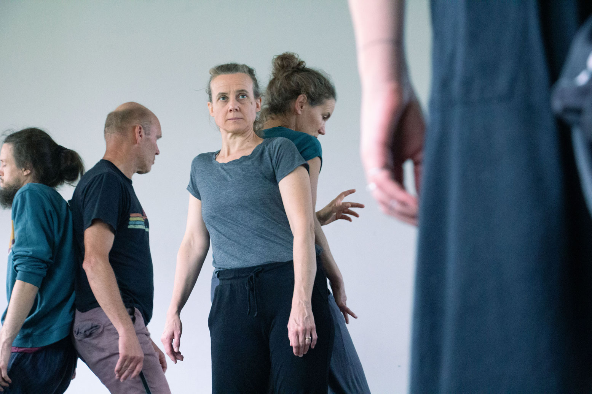
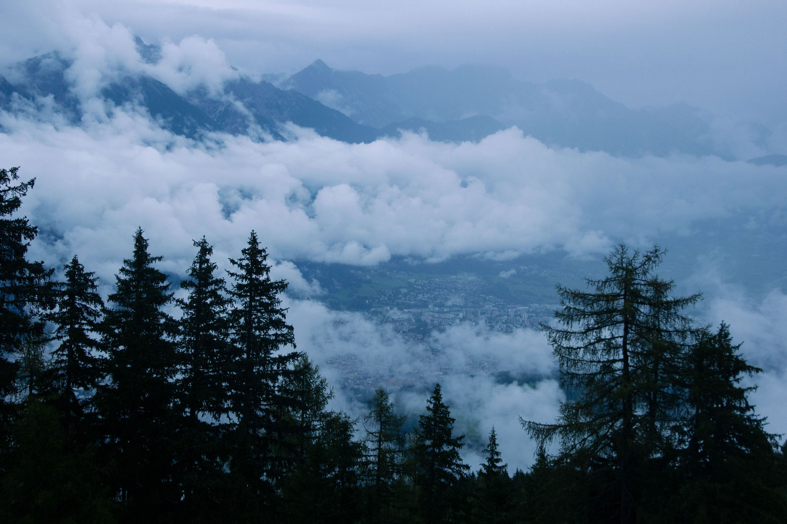
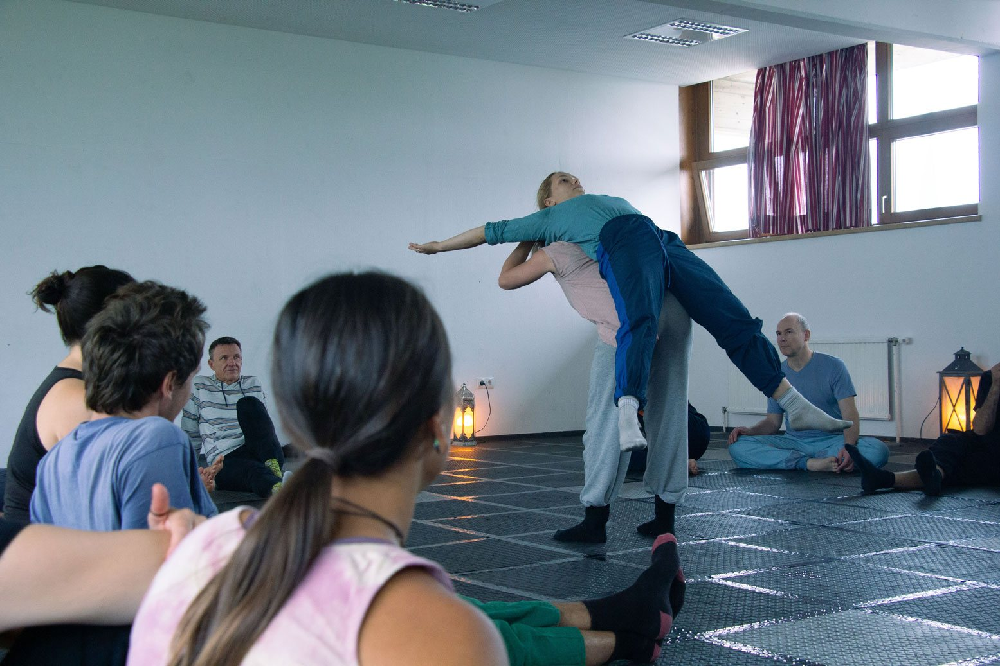
Festival Preview
Festival Directory
Venue & Accommodation / Food
Schloss Büchsenhausen in Innsbruck, local host accommodation, and vegetarian meals.
Teachers/musicians/class description
Workshops, consent culture, political lectures, live music, and informal talks.
Org Team & Partners
Tamara Maksymenko, Sasha Portyannikova, Lucilla Patrizi, and supporting institutions.
Cost & Registration
Festival policy, program hours, passes, and host form for Tirol locals.
Cost & Registration
Amount of spots at the festival is limited.
Your registration insures your participation.
If you’re unable to join us because of illness or another personal issue, your prepayment won't be returned.
We thank you for your understanding and respect of this festival policy.
Registration for only participation (classes, jams, lectures, and workshops). Pay attention to book your food please follow this link:
https://mmdt.at/CITyrolFest2023_Food
For one week of being with us you'll receive:
* Contact Improvisation, contemporary dance and performative art workshops - 29 hours
* Lectures and talks - 6 hours
* Jams with live music - 21 - 41 hours
* Contact Impro teachers performance
We apologize for technical inconveniences with online registration.
To register, please send an e-mail to soloandcityrolfest@gmail.com.
Helper
Prepayment 130 €
“Almost there”
Prepayment 205 €
For locals:
If you live in Tirol, you want to take part in our CI-festival, you have an option to accommodate one or more foreign participants, please feel free to fulfill this document.
Form →Teachers/musicians/class description
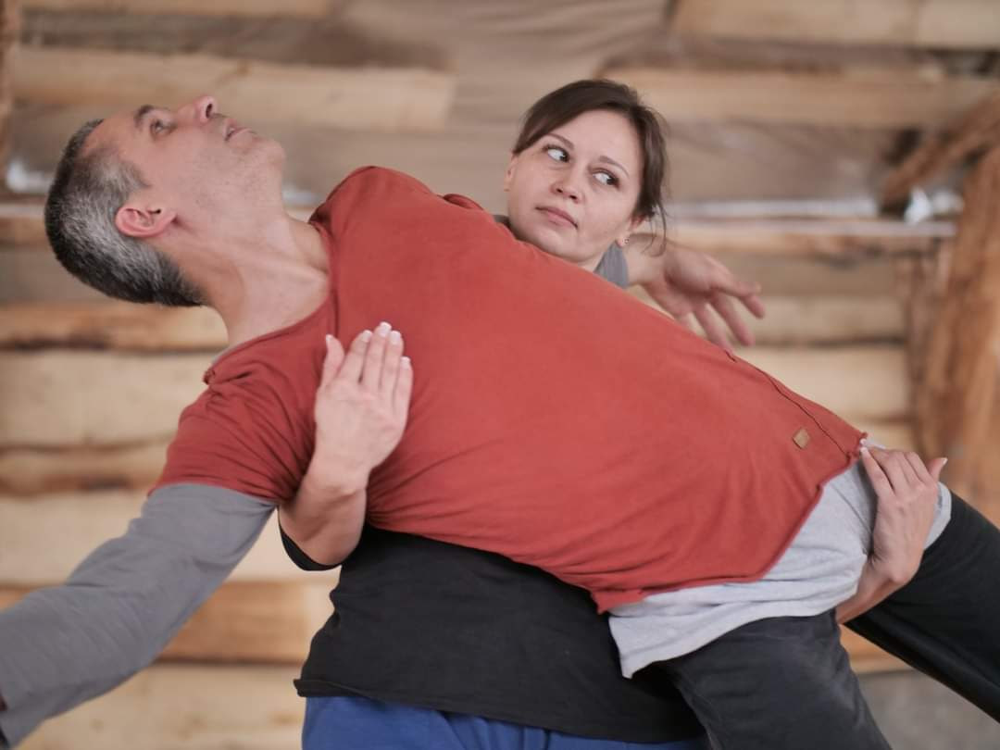
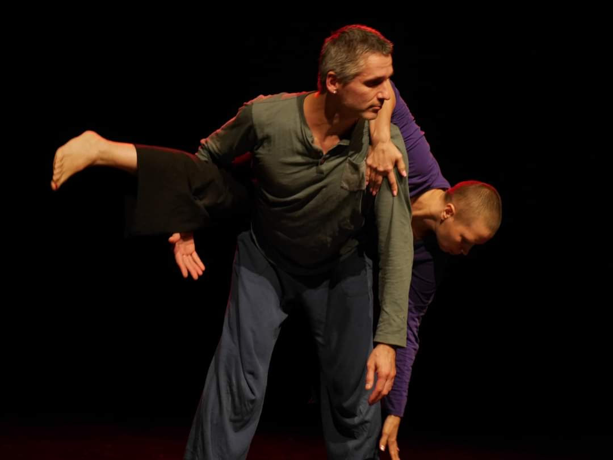
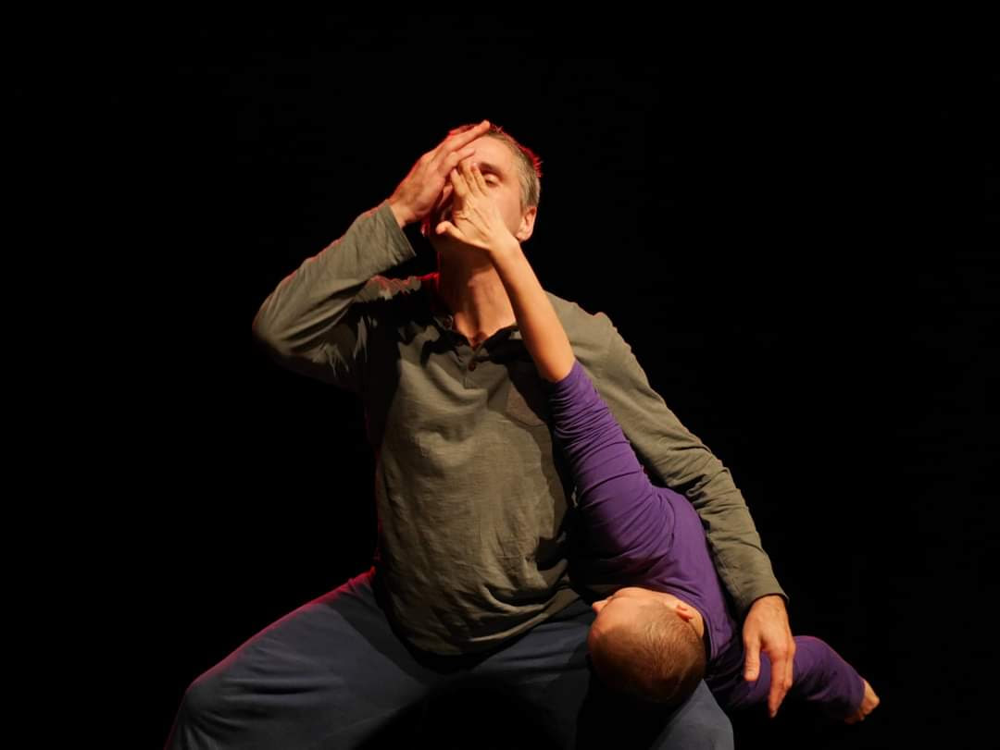
Sergey Semichev & Marina Semicheva (Ukraine)
Bio
Semichev Sergey. Born in 1978 in the city of Snezhnoye, Donetsk region, Ukraine. In childhood and youth, he was engaged in gymnastics and acrobatics. Later athletics and fitness. Professional massage therapist since 2000. From 2007 to 2013 professional fitness trainer and massage therapist in a sports and recreation center in Donetsk, Ukraine. He started dancing contact improvisation in 2011 in Donetsk. In 2013 he started teaching contact improvisation together with his wife Marina Semicheva in Donetsk. In 2014, due to the outbreak of war in eastern Ukraine, he moved with his family to Kyiv, where he continued to study and dance contact improvisation. Since 2015, a teacher of contact improvisation in the Kyiv community of contact improvisation. From 2016 to 2021 teacher at the international festival of contact improvisation Dancefullness in Ukraine improvisation. From 2017 to 2022, together with Marina Semicheva, the organizer of regular contact improvisation laboratories in Kyiv. Co-organizer of the contact improvisation festival Ecite 2019. From 2016 to 2021 co-organizer and teacher of the winter contact improvisation festival Karpatski fest. From 2016 to 2021, co-organizer and teacher of the festival of contact improvisation and filming of dance films Dance Pavilion. Organizer of the winter festival of contact improvisation Contact winter 2022. Traitor of contact improvisation in Ukraine, Moldova, China, Portugal, Austria, and Italy. In 2022 he moved with his family to Italy/Rome.
Semicheva Marina was born in the town of Snezhnoe, Donetsk region, Ukraine. In her youth, she was involved in athletics. Started dancing contact improvisation in Donetsk in 2011. Together with her husband Sergey Semichev, in 2013 she began teaching contact improvisation in Donetsk. Since 2014 she has been dancing and studying contact improvisation in Kyiv. From 2017 to 2022, together with Sergey Semichev, he is the organizer of regular Kyiv laboratories of contact improvisation. Together with Husband Sergey Semichev, he is a co-organizer of the contact improvisation festivals Karpatski fest and Dance Pavilion. Organizer of the contact improvisation festival Contact Winter 2022. From 2017 to 2022, together with her husband Sergey Semichev, he is the organizer of regular contact improvisation laboratories in Kyiv. Since 2020, she has been a teacher of the Kyiv community of contact improvisation. Designer and founder of the dance and sportswear brand Eldabros. Since 2022 lives, dances and teaches contact improvisation in Rome.
Description of the classes:
How can we free our body and allow it to simply respond to changes in space? How do changes in the body create a game in the interaction of the body with the external space and the partner's body? How not to lose yourself in the endless game of space and enjoy the meeting with the unknown? In our workshop, we will work with various systems of our body. We will try to synchronize these systems for the comfortable use of our body and the partner's body in interaction. We will try to take a different look at the basic principles of movement and interaction, and perhaps this will open up great opportunities for us and help create more freedom and interest in improvisation. Playing and experimenting with the physical abilities and states of our body.
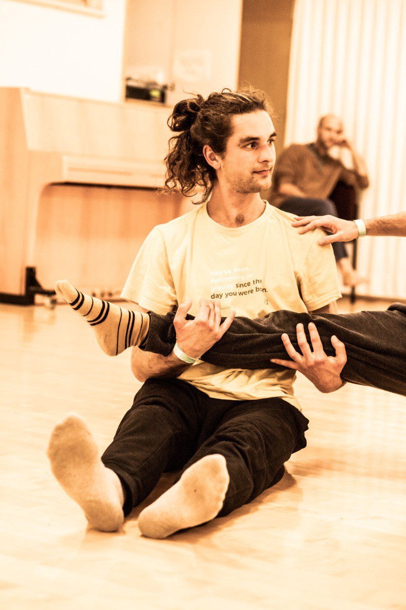
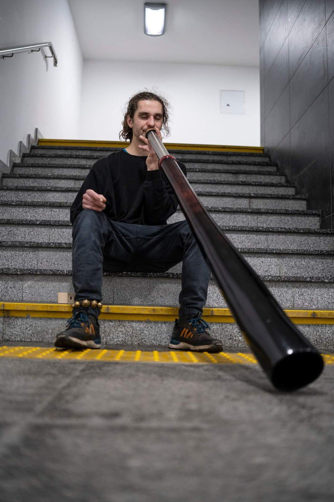
Pawel Kubiak (Poland) - dance teacher and musician
Bio
An educator and dancer. He graduated CUUD Breath Integration School. During his studies in Poznań, he worked in a forest kindergarten, and led CI classes and movement workshops for parents and children.
He organizes jams, and workshops, and lead classes in various cities in Poland and festivals (Warsaw Flow, FRU festival, Israel CI Convention)
Paweł draws inspiration from practicing the Feldenkrais Method and AcroYoga. He enjoys learning new things, doing less (sometimes too much), and following curiosity and playfulness.
He explores improvisation in motion and playing music - he is fascinated by combining these worlds and the dialogue between them.
Class description - moved to move
During the process of learning to dance Contact Improvisation, each of us acquires the language that we use on the jams. Sometimes we can unknowingly and habitually repeat certain sentences or consciously use only known words. As an example, we can have jam dancing only in duet and not exploring other possibilities.
In this class we will notice language we use and try learn new words, which will make our conversation more interesting.
We start slowly by rolling our head on the floor. Maybe there are many words we have not heard before? Then we take that gentle quality into quite small talk and crazy conversation - trying to still listen carefully.
Jam is the best teacher. We will talk to him using new words, being playful and open to the unknown
Music:
“I am fascinated by exploring the world of music combined with movement. When I play, I dance - because I play with my body. I am interested in exploring the world of didgeridoo and its production. Flute, jaw harp, glass, water, silence - I like to find sounds in instruments and less obvious things. I am interested in finding a dialogue between movement and music, discovering their similarities.”
dance: Contact Improvisation - postcard from Barcelona #4
music: Youtube channel
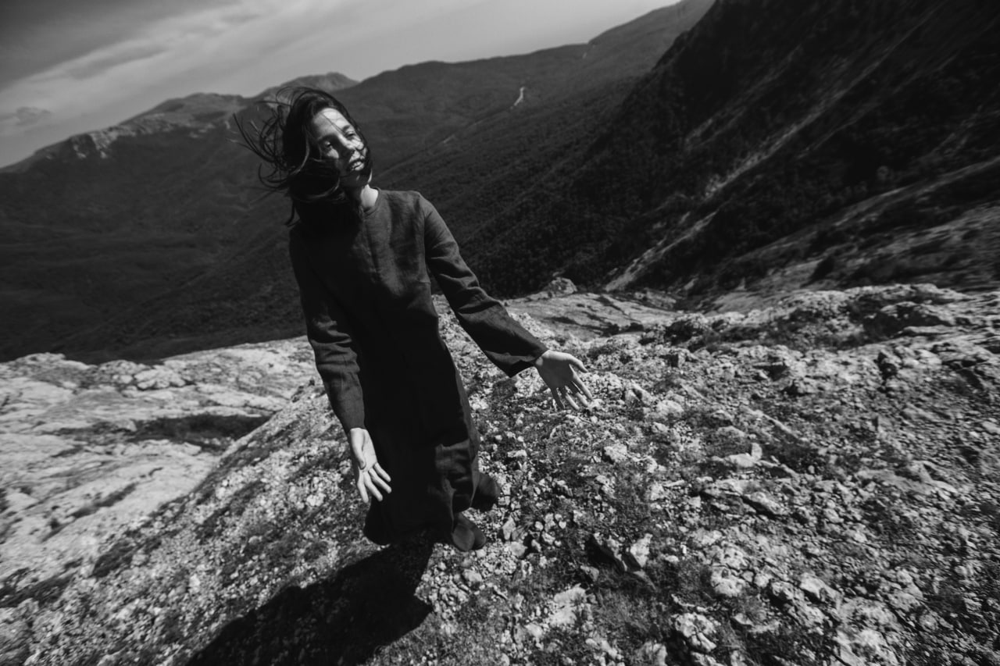
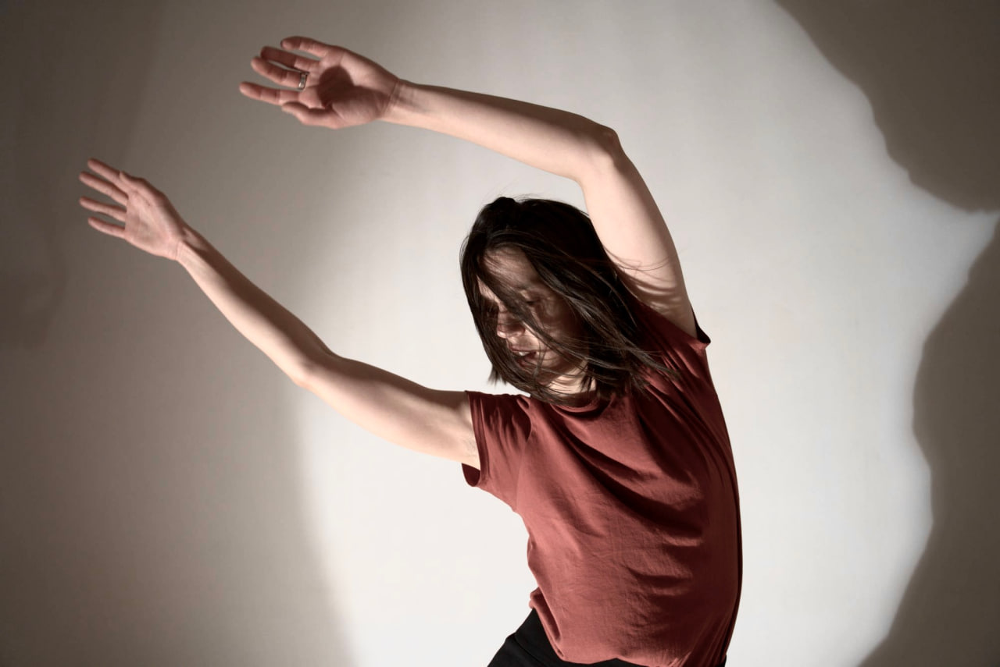
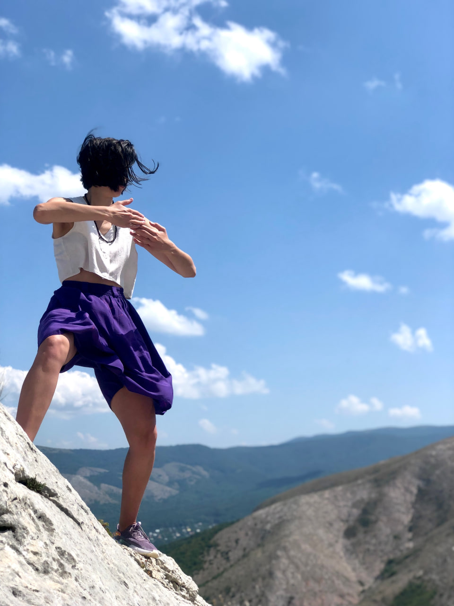
Olena Polianska - Ukraine
Bio
А performer, choreographer, teacher of contemporary dance and contact improvisation, and philologist. She began her dance way as a performer and impro-dancer, participating in festivals (PushOK, Moving Body, CI and video dance projects DANCEpavilion, Theater Almanac, Fairytale today, The contact improvisation convention Israel, International Dance Festival Warsaw CI FLOW, and others).
Was a co-organizer of the festival of street performances “Week performance NICHOGOsobi in Lviv” (Lviv), was a co-curator and teacher of the Laboratory of Contemporary Choreography “FreeDanceLab” (Simferopol) and the laboratory of the movement “M.У.B” (Simferopol), began to receive a master's degree in Contemporary dance art-practices (ARB Vaganova, St.Petersburg), now lives and works in Germany: resident of Kampnagel Internationale Kulturfabrik GmbH (Hamburg), of the Tanzkomplizen - TanzZeit e.V. (Berlin), of the Ringlokschuppen Ruhr Theatre (Mülheim an der Ruhr).
IMPROVISATION workshop:
What motivates my movement?
What motivates me while moving?
I work with attention on several levels according to the principle of cumulation: on the first physical (muscles) - work with body tone, balance, rotation, and development of dexterity. For movement, I offer simple tasks for work with speed, trajectory, displacement, repetitions, cyclicity, dynamics, amplitude, the direction of movement, and others. Then the second level is added attention to space: direct work with vision, fixing a view of the environment and oneself in it. Feeling in the present moment. The main focus is on haptic communication with space. At the third level, I pay attention to the sensation of my body, check how I touch the floor, where my body weight is, and where my attention is focused. I suggest giving time and space for the sensory system, to feel movement with skin, muscles, and bones. Feel the sounds and vibration, silence. To observe where a real movement is born, to follow it.
The last level will work with the composition, space, and time; with the object, with choreography.
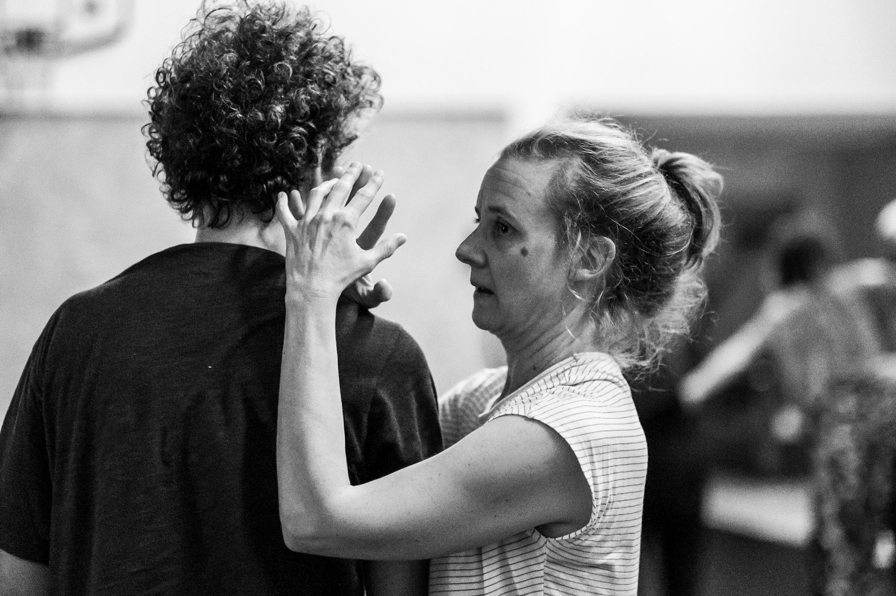
Rebecca Plattner
Bio
Rebecca Plattner-Wörgartner was born in Kitzbühel (Austria) and is living happily with her lovely family in St. Johann in Tyrol (Austria). Becky started dancing at the age of 10 with Ballet and gradually got in touch with different dance styles and techniques such as Afro, HipHop, Jazz (Funky, Lyrical, Latin) Modern ( Horton, Limon, Graham) Musical and Contemporary Dance (floor release, counter technique) Improvisation (Instant Composition,Sasha Waltz, Kidd Pivot, Gaga).1993 she graduated in a pedagogical dance education in Munich at the Iwanson Dance Center and since that time she is teaching, dancing and choreographing at the „Tiroler Ballettschule“ and „Bad Reichenhaller Ballettschule“. Her wide ranged teaching, dancing and choreographing repertoire reaches from Ballet, Jazz, Contemporary, Improvisation. Becky is a passionate teacher and loves all her students which age extends from 3 to over 60 years.
The first time when she experienced Contactimprovisation, which is nearly twenty years ago was with Willi Dorner (Bodies in Urban Spaces) and since this workshop she has not been able to let go of this kind of contemporary dance form and it caught continuously her attention and interest. To keep updated and get inspired she participated in several workshops such as by Scott Wells, Simonetta Alessandri, Frey Faust, Jörg Wenzel, Jose Biondi, Annette Lopez Leal and Malcom Manning. Since this remarkable moment in her life when she got to know Contact Improvisation she tried to establish a CI community in the east of Tyrol. Even though it was not so easy in the beginning as people were sceptical about it she didn’t let go and stayed persistent and due to her passion for CI which she transports clearly in her classes she build a small scene and has weekly her loyal followers.
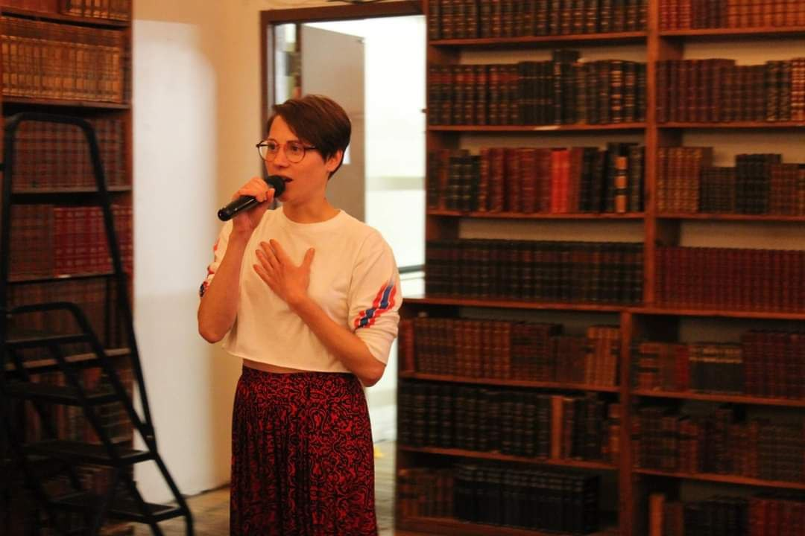
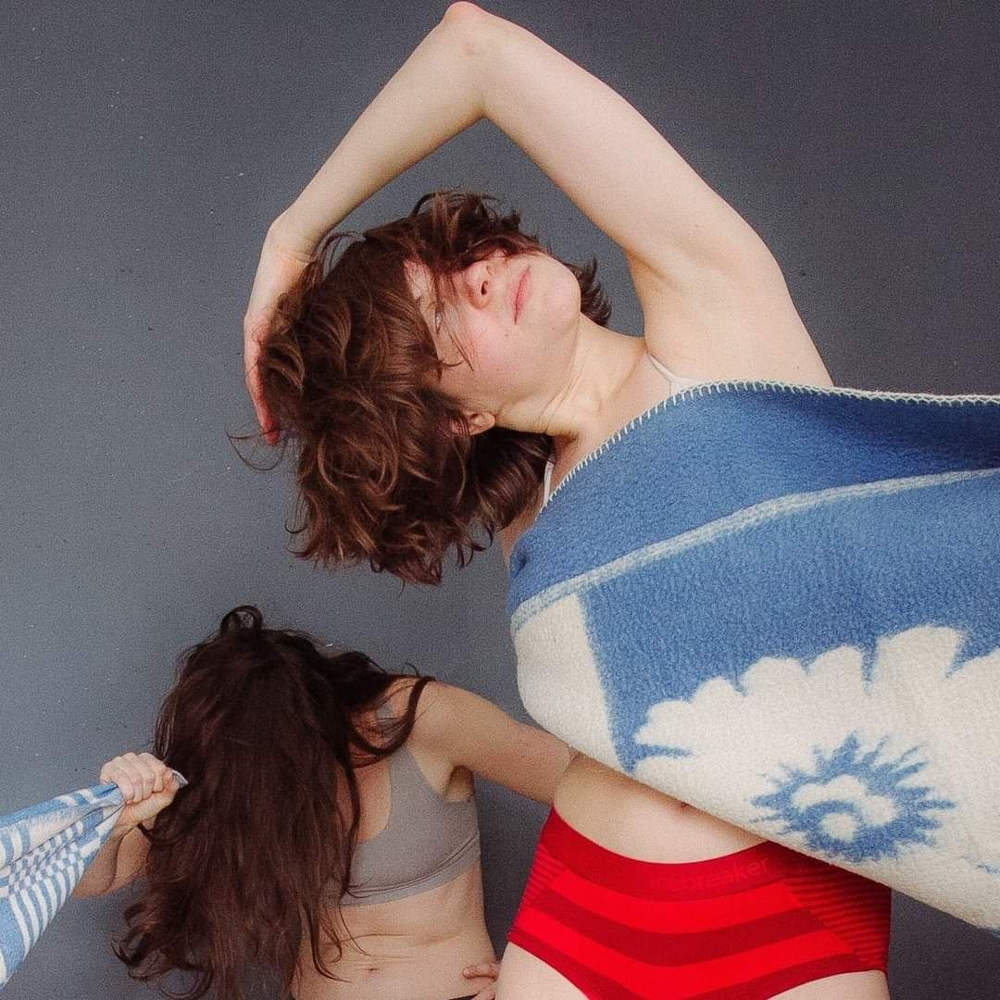
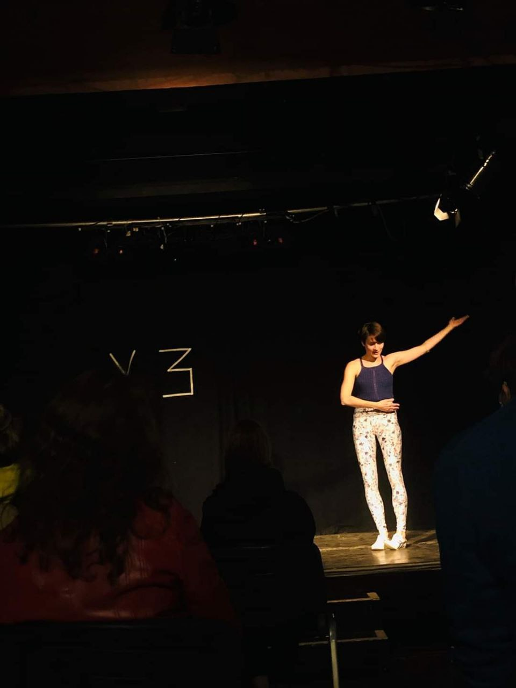
SASHA PORTYANNIKOVA - lector
Bio
Graduated from Vaganova Ballet Academy (MA’2013), cofounded dance cooperative Isadorino Gore with Dasha Plokhova in 2012, became Fulbright Visiting Scholar in 2018 and danceWeber in 2019.
Participated in international scholarship programs with residences in the Netherlands, Switzerland, Germany, Austria, Scotland, Spain and the USA. Cooperated with Amnesty International, Goethe Institute, V-A-C Foundation, ZKM, Garage Museum of Contemporary Art, Moscow Museum of Modern Art and others.
Sasha creates dances, curates projects, teaches dance in Academia and primary school. She considers dance as a cultural, social, political and research practice.
Topic of the lecture: “Political aspects of Contact Improvisation: engagement and blind zones”
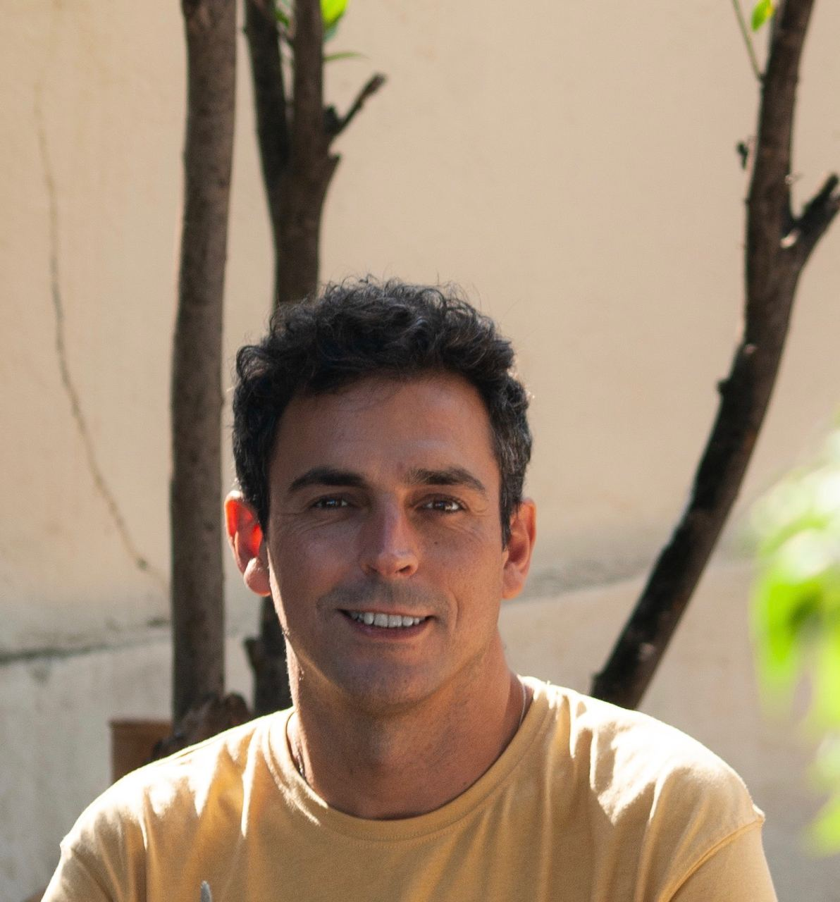
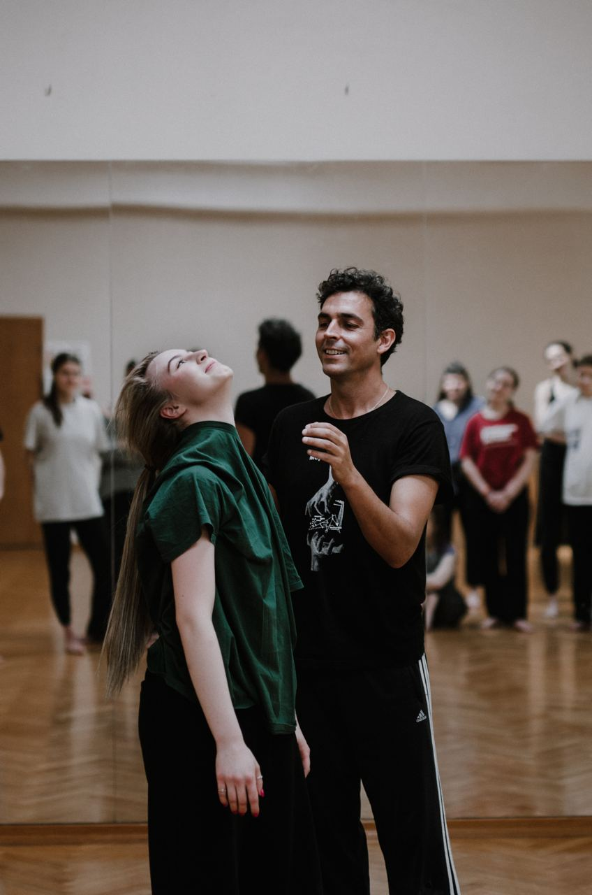
Felix Arjona
Bio
Félix Arjona is a multidisciplinary and versatile artist and creator from Seville, whose professional work occupies different facets that cover a great diversity of professional areas. In 2008, after finishing his studies in Berlin, Félix began working as an dancer/performer and collaborated on a different projects. He currently participates as a choreographer in the project “Rhythms of Nature” Erasmus plus Program. Call 2021 Round 2 KA2+. And he has participated in Vertebración III in an improvisation dance performance in collaboration between PAD Assoc. and Assejazz (Jazz Association in Sevilla).
Félix is currently vice-president of the Association of Professionals and Dance Companies of Andalusia (PAD). Félix is nominated for best dancer at the Seville Stage Network Awards for “Lo que toca” directed by Raquel Madrid (2013). Félix receives the 1st Jury Prize for “Half Full”, in the Capsule Contest of the Festival Fest, Seville (2014).
He receives the Tejer Danza Award for his educational project SOMA&Play. Research and creation through movement, contact and improvisation, with the XII edition of the PAD Awards. (Assoc. of Cías and Andalusian dance professionals) (2022).
THERAPIST AND MENTAL HEALTH
I work from simplicity, sensitivity, empathy and common care. Therapist accompanying change processes:
- Personal accompaniment, couples, families or groups. Eventual or regular sessions for self-knowledge and common care.
- Training Workshops. Training workshops in Gestalt therapy. Facilitation of tools for artistic and creative expression and the resolution of biopsychosocial conflicts.
- Advisor and Accompaniment of Groups and Communities. Facilitator and mediator in the creation of groups or communities in process.
- Research and experimentation of new body, sensory and psychosomatic
languages as well as playful and scenic for mental health and well-being. In 2006, Félix begins basic training as a Gestalt therapist at JERA and a year later he moves to the Gestalt training group within the Gestalt Counseling Institute. (Tomares) Seville, until 2011. In 2011 he founded the training school for Counselor Gestalt therapists, La Semilla. Creative Gestalt Counseling School (2011/15).
Consent Culture Workshop Introduction
“Consent Culture” is an environment built around mutual consent. It respects a personal decisions and autonomy of their own body and acknowledges that they are the best judge of their wants and needs. Consent is ongoing, meaning it can be withdrawn at any stage, and must be freely given.
But we cannot experiment on mutual consent until we recognize consent in ourselves. We cannot explore our needs and desires apart from our body, since it is through it that we perceive the possibilities it offers us between restriction and freedom.
If we take our body as a communication channel for our mind, which acts as a physical container that records experiences, this will be the best guide to understand consent as a continuous process of the person when making decisions and recognizing their autonomy.
Workshop Proposal
In this workshop we are going to explore as a group both the internal and external spaces that help us to know where my own personal limits begin and end, and how these can change depending on the perception I have of oneself and of the other in a mutual relationship.
We are going to discover tools of body, sensory and emotional awareness that provide us with the necessary knowledge to answer the questions that arise in personal interactions.
We will create a climate of respect and mutual support to be able to deepen and allow consent exploration proposals to be felt in a safe and reliable way.
We will use materials that come from dance contact improvisation, gestalt therapy, conscious contact and art therapy to reveal both visible and hidden contents that facilitate a better relationship of consent with oneself and the rest of the group.
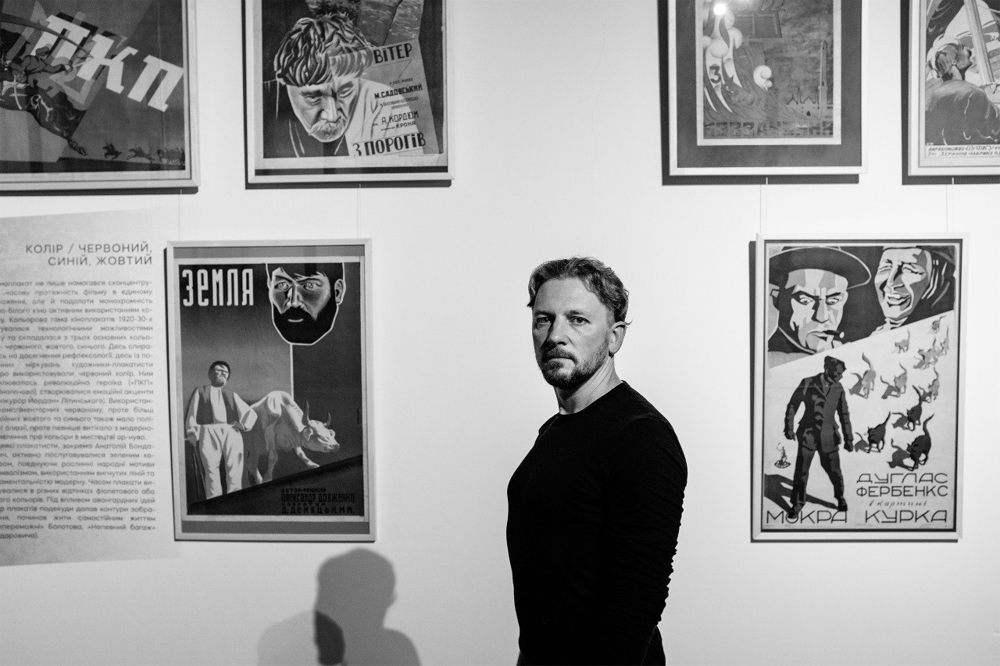
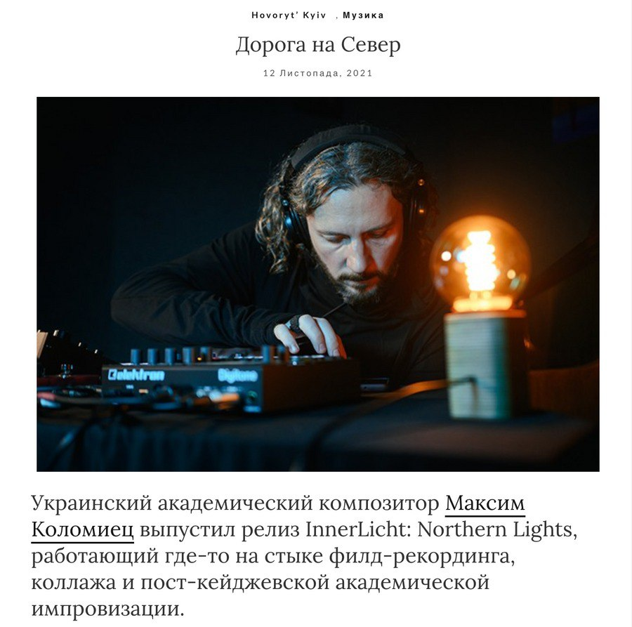
Maxim Kolomiiets - musician
BioMaxim is a composer, oboist, and music curator from Ukraine. Full bio read here: https://maximkolomiiets.com/about
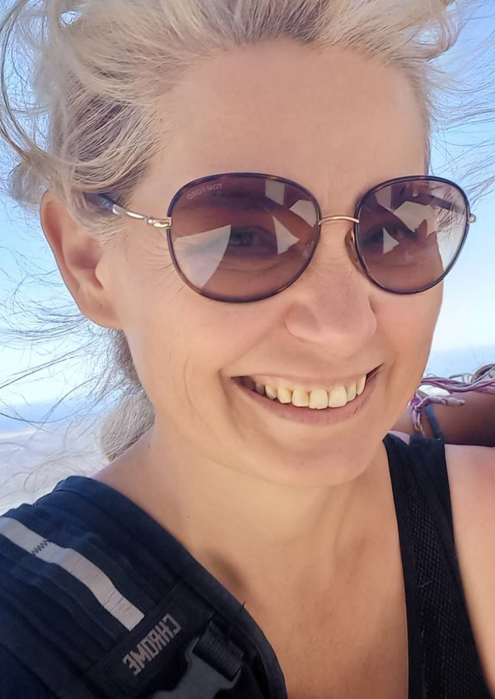
Edith Ornig (Psychotherapist)
Bio
Edith does contact improvisation for about 2 years regularly.
She is a psychotherapist for behavioral therapy, hypnotherapy, and brain spotting. She loves dancing and does yoga.
“My aim is to support you in your processes. Let's See where the sensations can bring you.”
Edith Orning is a part of the “Angel group” that will be there for your mental safety. If you have any questions during the festival about your boundaries, breaking them, or if you have a slump in your mood, Edith and other team members will be there to listen to you.
Web-site

Tamara Maksymenko
Bio
Tamara Maksymenko is a professional dancer, choreographer, and teacher of contact improvisation and contemporary dance for 17 years already. She has been teaching many workshops all over the world (Poland, Spain, Israel, Austria, Italy, Greece, Finland, Egypt, Germany, Russia, Ukraine, Morocco, Bulgary, Sweden, Portugal, France, and Turkey). She is the founder of Motion Mode Dance Theatre (MMDT) and the creator of many dance projects.
28 years of dance experience (since the early age of 4). She got medical education in body therapy and sociology at Dnipropetrovsk National University and trained at the Physical Theatre in Intragna (Switzerland) with Thomas Mattler.
Now Tamara is a member of the Ukrainian Contemporary Dance Platform Association and she is a member of OFFTANZ Tirol Association (Austria). The founder of “Solo & CI Tirol Festival” and “West meets East”.
Contact Improvisation Workshop:
Hands, hooks, touch. During this workshop, we will look at some patterns where we use arms and hands mostly. The workshop will base on improvisation research and include clear forms of physical communication. How can we gently grab a partner giving him/her space to move? And what kind of dynamic between two people creates with hooks?
Tamara, Pawel and Olena: Talk with you in informal way
We present briefly the hystory of CI and open a talk about “What bothers us in Contact Improvisation World”. We will open this space to talk about our fears, vulnerabilities, challenges - to be seen with them and to see others. We will talk about them and invite them to dance. We are going to make the transition from hiding them to being acknowledged, hugged and taken to the dance floor. This talk is structured with verbal and nonverbal communication between teachers and the public.
Program
The Festival has its “working hours” and “free time” which we offer all participants to spend time with us in the mountains or in the place of leisure in Tirol.
The yellow color in the timetable is our “working time”, where we study, move, talk, and research.
The green color is meal time and `blue time is free time for participants who can go to the mountains or spend time somewhere else.
Venue & Accommodation
Schloss Büchsenhausen.
The program is going to run there with 2 times vegetarian food per day. Food is extra.
*As to accommodation, the local dance community would love to offer foreigners a host: Private space to sleep or an affordable Airbnb option.
- To get your bed, please contact one of the organizers of the festival via WhatsApp or email:
Lucilla +39 340 100 3628
lucillapatrizi@gmail.com
Tamara +4367763027506
motion.mode.theatre@gmail.com
Address of the festival Venue:
Weiherburggasse 13, 6020 Innsbruck (Schloss Büchsenhausen)
* If you have any questions about how to get easily to the festival venue, please text here: soloandcityrolfest@gmail.com
Food
We would like to minimize your effort during the week of the “SOLO & CI Tirol Festival”, that's why we would like to offer you good, diverse, vegetarian food two times per day.
Pay attention that it won't be possible to use the kitchen in the space. In case you want to eat on your own, you would have to organize yourself.
Food 2 times per day (Check please the program of the festival ) - 175 euros.
It will not be possible to order food from us during the festival. Please take the decision in advance.
Book your food
Venue Gallery


Food Gallery


Org Team

Tamara Maksymenko. (Ukraine - Austria)
Tamara Maksymenko is a professional dancer, choreographer, and teacher of contact improvisation and contemporary dance for 17 years already. She has been teaching many workshops all over the world (Poland, Spain, Israel, Austria, Italy, Greece, Finland, Egypt, Germany, Russia, Ukraine, Morocco, Bulgary, Sweden, Portugal, France, and Turkey). She is the founder of Motion Mode Dance Theatre (MMDT) and the creator of many dance projects.
28 years of dance experience (since the early age of 4). She got medical education in body therapy and sociology at Dnipropetrovsk National University and trained at the Physical Theatre in Intragna (Switzerland) with Thomas Mattler.
Now Tamara is a member of the Ukrainian Contemporary Dance Platform Association and she is a member of OFFTANZ Tirol Association (Austria). The founder of “Solo & CI Tirol Festival” and “West meets East”.
Question as to participation:
Whatsapp: +4367763027506
soloandcityrolfest@gmail.com
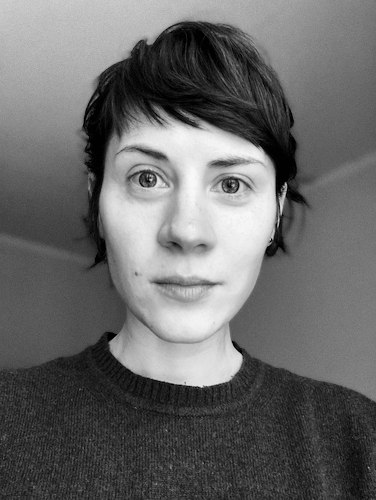
Sasha Portyannikova
Graduated from Vaganova Ballet Academy (MA’2013), cofounded dance cooperative Isadorino Gore with Dasha Plokhova in 2012, became Fulbright Visiting Scholar in 2018, and danceWeber in 2019.
Participated in international scholarship programs with residences in the Netherlands, Switzerland, Germany, Austria, Scotland, Spain, and the USA. Cooperated with Amnesty International, Goethe Institute, V-A-C Foundation, ZKM, Garage Museum of Contemporary Art, Moscow Museum of Modern Art, and others.
Sasha creates dances, curates projects, and teaches dance in Academia and primary school. She considers dance as a cultural, social, political, and research practice.
General questions:
soloandcityrolfest@gmail.com

Lucilla Patrizi
She finished her biology study in 2017 but has been drawing since always. She is a quick drawer and a long-term observer, the aesthetic of what already exists and the power of biological processes in nature fascinate her. She is not a magician, She is not inventing new stuff. She tries to make hidden structures visible as sketches or words on paper, sculptures, or paintings.
Accommodation request:
soloandcityrolfest@gmail.com